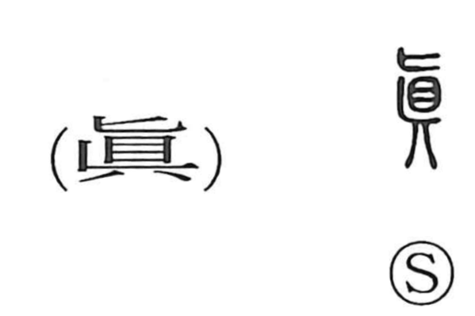

真

Kun: makoto, ma | On: shin
true ・ real ・ truth
Explanation
真 abbreviates 眞, which combines 匕, an inverted human figure, with 県, a head suspended upside down. The formation concerns someone who has died unexpectedly or fallen dead away from home.
Such a death could leave a dangerous spirit. Related characters concern treating it with care, calming its anger, and sealing or settling its power with jade. 慎 and 鎮 belong to this world of reverence and pacification.
The dead person has passed beyond further change. From that unalterable condition come the eternal, genuine existence, and what is true. The word extends to one's original nature and to ultimate reality. A true person or true knowledge then belongs to a condition beyond the limits of ordinary, changeable existence.